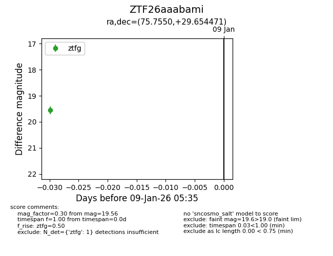
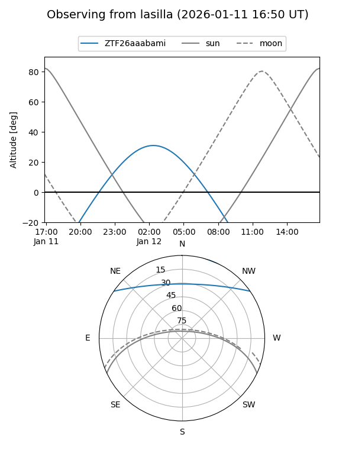
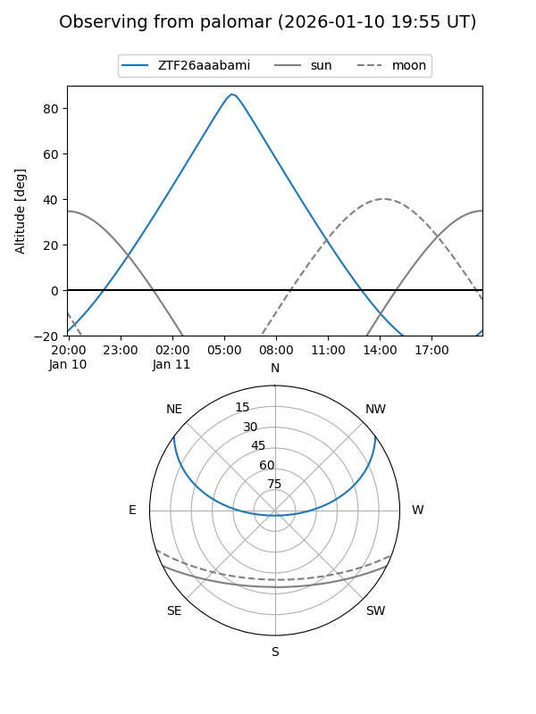

ZTF26aaabami
Target ZTF26aaabami at 2026-01-09 05:35
Aliases and brokers:
FINK:
Lasair:
ALeRCE:
alt names
ZTF26aaabami (ztf,fink_ztf)
Coordinates:
equatorial (ra, dec) = 75.7550,+29.65447
equatorial (HMS+DMS) = 05:03:01.21,+29:39:16.09
galactic (l, b) = (174.1814,-7.28330)
Flags:
Photometry:
last ztfg=19.56
1 ztfg detections
Lightcurve

Visibility


Additional plots